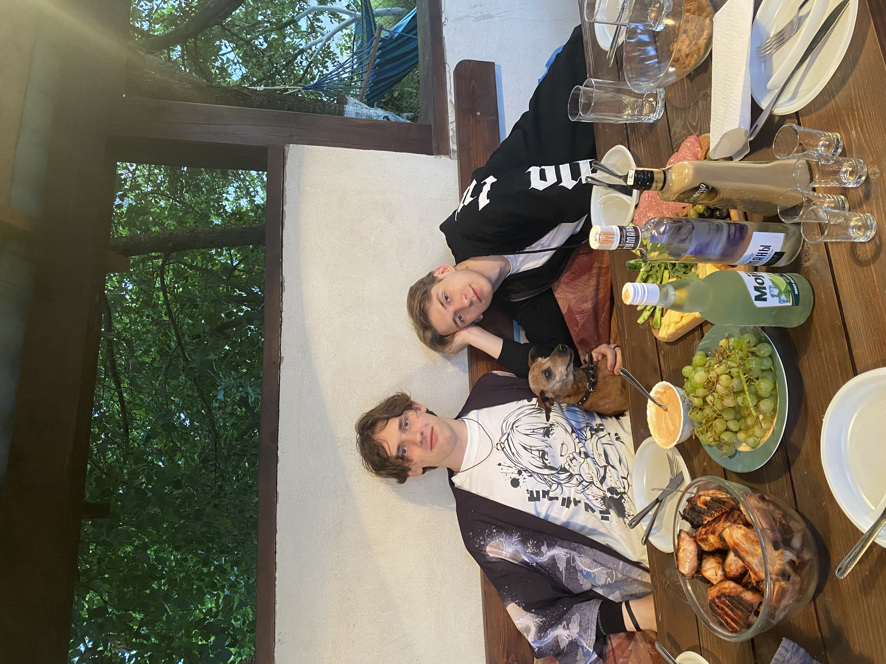

<html>
    <head>
        <title>Достопримечательности</title>
        <meta http-equiv="content-type" content="text/html" charset="UTF-8">
         <!--Стиль для обтекания текста-->
    <style>
        .left{
            float: left;
            margin: 7px, 7px, 7px, 0px;
        }
        .right{
            float: right;
            margin: 7px, 7px, 7px, 0px;
        }
    </style>
    <!--Задний фон-->
    <style>
        body {
          background: url('фон.avif');
          background-repeat: repeat;
          background-size: cover;
        }
        </style>
       <!--Расположение текста по центру-->
 <style>
 .text-center {
    text-align: center;
    
  }
  </style>
  <!--Картинки по цетру с подписью-->
<style>
    .pic {
     display: block; 
     text-align: center; /* Выравнивание по центру */
     font-style: italic; /* Курсивное начертание */
     margin-top: 0; /* Отступ сверху */
     margin-bottom: 5px; /* Отступ снизу */
     color: #666; /* Цвет подрисуночной подписи */
    }
   </style>

    </head>
</html>

<body class="body">
    <h1 class="text-center">Достопримечательности</h1>
    <p>Так как в Луговой Слободе нет достопримечательностей, я познакомлю вас с моим домом и его маленькими достопримечательностями.</p>
    <h2><strong>Беседка</strong></h2>
    
    <p>Беседка- самое уютное и классное место летом! Совсем недавно мы установили жидкие окна, благодаря которым внутрь не задувает ветер. именно здесь происходили самые смешные, интересные и увлекательные моменты с моими друзьями и знакомыми.
        
        
        

</p>
<h2>Тренажерный зал</h2>
<p>Тут я провожу около5 часов в неделю, а также хожу в тренажерный зал Академии Управления.<br>Мой зал оснащен, вобщем, самым базовым и необходимым:
<ol>
    <li>Штанга в тренажере</li>
    <li>Гири</li>
    <li>Снаряды другого вида</li>
    <li>Массажный ролл</li>
</ol>
</p>
<h2>Детская площадка</h2>
<p>Она располагается не на территории моего дома, но все-таки я с гордостью могу назвать площадку Луговой Слободы народным достоянием!
    <br>Помимо того, что тут есть просто качели для детишек, на футбольном поле каждое лето проводится чемпионат по футболу среди любителей. Сюда приезжают команды от близлежащих деревень, чтобы сразиться за кубок.
    <br>
</p>
</body>